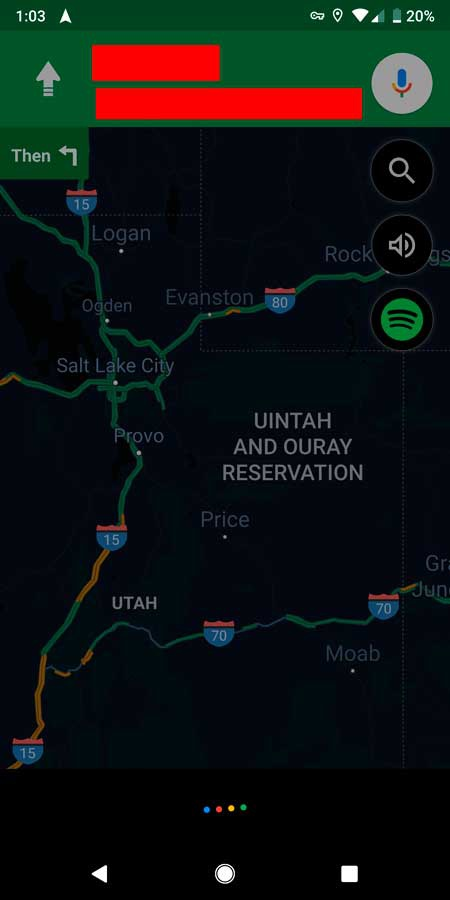
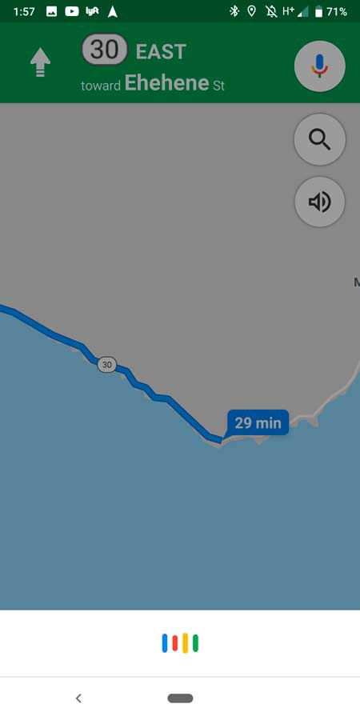
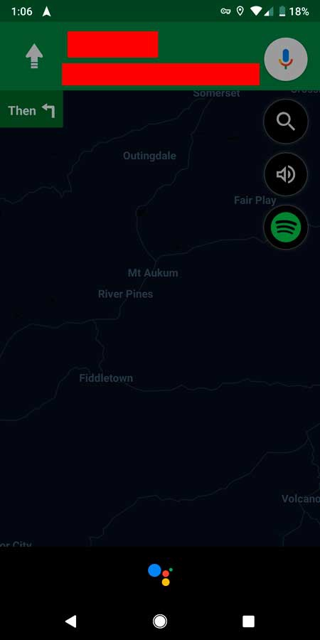

LA MEJOR PAGINA DE TECNOLOGIA |
||||
|---|---|---|---|---|
| INICIO/NOTICIAS | MOVILES | TABLETS | WEAREABLES | ACCESORIOS |
| Redes sociales |


|
| REGISTRO |
LA MEJOR PAGINA DE TECNOLOGIA |
||||
|---|---|---|---|---|
| INICIO/NOTICIAS | MOVILES | TABLETS | WEAREABLES | ACCESORIOS |
| Redes sociales |
|
|
| REGISTRO |
El asistente de Google lleva con nosotros ya mucho tiempo en los móviles Android, y se ha convertido en un complemente perfecto para el uso diario del terminal, haciendo más sencilla la ejecución de algunas tareas. Hasta ahora podíamos utilizar Google Assistant para algunas tareas de Google Maps, pero siempre de manera externa a la app. Como pedirle que nos dijera cómo se llegaba a tal o cual lugar y que nos enviara las indicaciones al teléfono u otro lugar. Ahora Google Assistant se integra por fin en Google Maps con comandos adaptados a la navegación, y que van a hacer de ella algo mucho más sencillo

Fue durante el Google I/O de la pasada primavera cuando los de Mountain View anunciaron esta actualización e integración del asistente en la aplicación de mapas y navegación. Pues bien, esta actualización está llegando por fin a los móviles Android con muchas novedades, y sobre todo un uso más sencillo de la aplicación de mapas cuando estamos conduciendo. Ahora dentro de la aplicación de Google Maps podemos activar el asistente de dos maneras, a través del habitual “Ok Google” o bien pulsando sobre el icono del micrófono de colores en la parte superior derecha de la pantalla.

La verdadera utilidad de esta integración es que podremos pedirle cualquier cosa a Google Maps sin necesidad de perder de vista la navegación de nuestro trayecto. Si hasta ahora el asistente dejaba en un segundo plano la app, cuando lo hagamos desde Google Maps esta no se verá afectada en absoluto.

Lo mismo pasa con las llamadas, que tal y como ha mostrado un usuario de Reddit, se pueden llevar a cabo con Google Assistant sin necesidad de que aparezca la pantalla del dial para marcar el teléfono. Una serie de cambios orientados a priorizar la navegación, beneficiándonos de los comandos del asistente sin interferir en ella. Irán llegando poco a poco a todos los móviles Android, por lo que en los próximos días podrían llegar a vuestro smartphone.

| MAS VENDIDOS | ||
|---|---|---|
| Nº | Dispositivo | Precio |
| 1 | Iphone X | 1150€ |
| 2 | Samsung Galaxy s9 | 749€ |
| 3 | Ipad 2018 | 439€ |
| 4 | Huawei Watch 2 | 285€ |